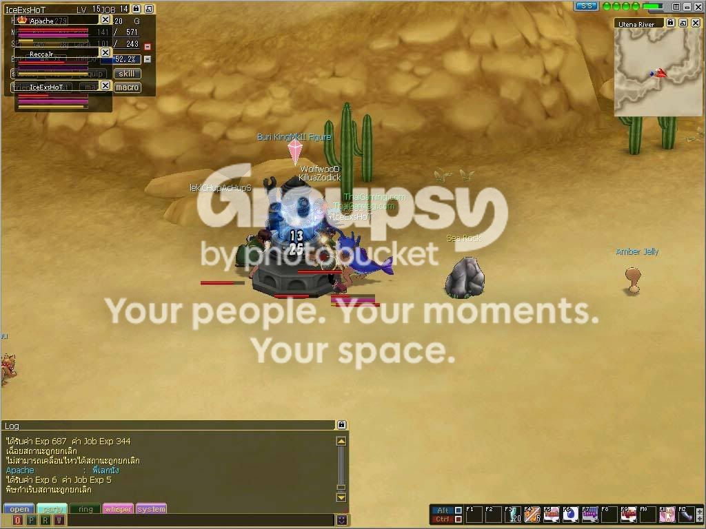

หน้า 50 จากทั้งหมด 95

โพสต์แล้ว:
อาทิตย์ 24 มิ.ย. 2007 10:30 amโดย ECO
ถามหน่อยครับ ถ้าของพังแล้วจะซ่อมยังไงอ่ะครับ
ขอวิธีซ๋อม กับวิธีหาของซ่อมหน่อยครับ
อยากรู้ว่าตัวไรดอปของซ่อม ไรประมาณนี้อ่ะครับ
พวกอาวุด/เสื้อผ้า ไม่เกินเลเวล30ครับ
โพสต์แล้ว:
อาทิตย์ 24 มิ.ย. 2007 12:59 pmโดย ECO
ของซ่อม ก้จะแล้วแต่ว่าของอะไร แล้วใช้อะไรซ่อม ซึ่งใช้ของมาให้พวกสาย backpack ผสมเป็นของซ่อมหนะคับ
โพสต์แล้ว:
อาทิตย์ 24 มิ.ย. 2007 2:29 pmโดย ECO
คืออยากจะทราบว่า ผมพึ้งเล่นใหม่ ตอนนี้lv 2 ละ -''- กำลังรับQ เปลียนเป้นSW
1.lv 2ไปตีตัวหมาได้ไมที่ไปเอาเนื้อ
2.อัพสเตตัสอะไรดี?? ไปสาย BM
3.อัพสกิลไรดี??
4.ที่เคาบอกว่าของไทย EXP หาร จริงหรือเปล่า
5.คิดก่อน- -''
โพสต์แล้ว:
อาทิตย์ 24 มิ.ย. 2007 6:38 pmโดย ECO
คืออยากจะทราบว่า ผมพึ้งเล่นใหม่ ตอนนี้lv 2 ละ -''- กำลังรับQ เปลียนเป้นSW
1.lv 2ไปตีตัวหมาได้ไมที่ไปเอาเนื้อ
2.อัพสเตตัสอะไรดี?? ไปสาย BM
3.อัพสกิลไรดี??
4.ที่เคาบอกว่าของไทย EXP หาร จริงหรือเปล่า
5.คิดก่อน- -''
รวมๆเลยละกัน
ประมาณเลเวล5ถึงสู้Bauไหวครับ
เรื่องstatus กับskill เลือกย้อนไปอ่านหน้า 49-51 ดูครับ
เรื่องexp เป็นตามนั้นครับมันขึ้นยากกว่าเกาหลีประมาณ2เท่า หรือ 4-5เท่าหากเทียบกับclose beta อาจมีประท้วงอยู่เป็นเนืองๆ แต่ผมก็เห็นคนยังเล่นกันอยู่
ผมว่าปัญหาที่ใหญ่กว่าเรื่องexp น่าจะเป็นการแจมอย่างน่าตาเฉยนี่แหละ หามอนตีเองไม่ได้ก็แจมคนอื่นเค้า เมื่อกี้ผมล่าบอสหุ่นยนต์อยู่ พวกก็เข้ามาแจมเกือบ20คน - -* ไม่รู้จะว่ายังไง ก็เลยหยุดตีแล้วให้บอสมันเก็บกวาด ทีเดียววงแตก แต่พอเกิดก็วิ่งกลับมาแจมใหม่ สุดจะทนครับ


โพสต์แล้ว:
อาทิตย์ 24 มิ.ย. 2007 7:52 pmโดย ECO
เจอหารแบบนี้ เราเลิกดีกว่ามั้ง คิดไปคิดมาถูกเอาเปรียบ
แล้วคุณละคิดว่าไง เดียวมีเกมอื่นเปิดอีก ไปเ่ล่นเกมที่บริการดีและไม่เอาเปรียบดีกว่าไม??
โพสต์แล้ว:
อาทิตย์ 24 มิ.ย. 2007 8:36 pmโดย ECO
Phoenixkung เขียน:เล่นเซิฟไทยก็แบบนี้ครับ เด็กเยอะ
และที่ไม่เด็กก็อีกมากที่แจมกันเป็นเรื่องปกติ =_='
มีเรื่องสงสัยจะถามครับ ผมอ่านใน guide เห็นบอกให้ไปเข้ากองกำลังทางใจ้จะเหมาะกับอาชีพ sw เพราะมีของประจำอาชีพขาย
ทีนี้ผมเข้ากองกำลังทางใจ้แล้วจะไปซื้อของประจำอาชีพได้ที่ไหนรึครับ
อีกนิดเรื่อง EXP หาร 5 นั่นเป็นความจริง
ดูได้จากนี่
http://61.91.127.87/board/viewtopic.php?t=9221อ่านเสร็จแล้วกลับมาดูนี่
ช่ายครับเมืองใต้ คล้ายเป็นเมืองของสายfighter มีชุดขายตั้งแต่เลเวล35ขึ้นไปครับ
เสื้อ35 ดาบมือเดียว เลเวล40 สองมือเลเวล45 ชุดBM45 ชุด 55 สูงสุด55ครับ
แต่ไม่เข้าไปความจริงน่าจะเข้าทิศอื่นๆ เพราะทิศนี้เราซื้อบัตรได้อยู่แล้ว แต่ที่ดีคือขอบัตรจากป้าดีสุดแทนที่จะเข้ากลุ่มทหาร
ปล.ชอบรูปนั่นอ่ะครับขอเซฟไว้นะครับ
โพสต์แล้ว:
อาทิตย์ 24 มิ.ย. 2007 10:56 pmโดย ECO
รายชื่อนักดาบในหน้าแรกนั้นของserverไรเหรอครับถ้าเป็นMojiล่ะก้ขอจารึกไว้ด้วยคนละกันครับผมชื่อNeverWrathครับ
โพสต์แล้ว:
อาทิตย์ 24 มิ.ย. 2007 11:00 pmโดย ECO
พี่ค๊าบ ถ้าผมเล่นนักดาบเเต่ดันอัพ VIT ไป มันจะเป็นผลเสียไรอะป่าวงับ *0*
พอดีเล่นใหม่
อิ อิ
โพสต์แล้ว:
จันทร์ 25 มิ.ย. 2007 12:01 amโดย ECO
ผม ก้อ สวอต ครับ
อยู่ เซิพ 2
ตอนนี้ ไช้ ชื่อ IVI a s T € l2
อยู่ ครับ
จา เปน ผู้ นำ ที่ ยิงใหญ่ + +
โพสต์แล้ว:
จันทร์ 25 มิ.ย. 2007 8:08 amโดย ECO
พี่ค๊าบ ถ้าผมเล่นนักดาบเเต่ดันอัพ VIT ไป มันจะเป็นผลเสียไรอะป่าวงับ *0*
พอดีเล่นใหม่
ไม่มากหรอกครับ หากไม่พอใจก็ไปรีstatusฟรี1ครั้งได้ที่เมืองหิมะครับ ทิศเหนือ
ผม ก้อ สวอต ครับ
อยู่ เซิพ 2
ตอนนี้ ไช้ ชื่อ IVI a s T € l2
อยู่ ครับ
เคยเห็นครับ
เรื่องสกิลผมไม่อยากตอบแล้วถามซ้ำๆกันมามากเลย ลองกลับไปดูหน้า49-51เอาครับ
โพสต์แล้ว:
จันทร์ 25 มิ.ย. 2007 2:01 pmโดย ECO
คือเผอิญผม lv 7 job 7 up IAI ไป 5 แล้ว กะ hp max 2 พอไปดูหน้าเก่าๆ บอกว่า skill แรกที่ต้องใช้คือ Blow -.- ละกลัวว่าจา up ผิด เยยอยากทราบว่าสมควรลบตัวเล่งใหม่ดีมะงับ เหง IAI สำคัญช่วงหลังๆ -.- มะอยากเปลือง point ป่าวๆอะ
โพสต์แล้ว:
จันทร์ 25 มิ.ย. 2007 4:11 pmโดย ECO
โดนกระทู้เกรียนดันลงไปอีกและ :evil:
โพสต์แล้ว:
จันทร์ 25 มิ.ย. 2007 5:22 pmโดย ECO
ได้โปรด ตอบที เดี๋ยวโดนดันไปหน้า 2 หรอก :cry:
โพสต์แล้ว:
จันทร์ 25 มิ.ย. 2007 7:05 pmโดย ECO
ผมก็อัพai 5 ไม่เปงไรแต่เปลืองอย่างรุนแรง ตอนนี้ชั่วโมงนึงหมดค่า น้ำแร่ไป10k
โพสต์แล้ว:
จันทร์ 25 มิ.ย. 2007 8:04 pmโดย ECO
ดาบ lv แรกสุด lv 11 งับ ซื้อจาก downtown ที่เหลือก็ไล่ๆกานไป